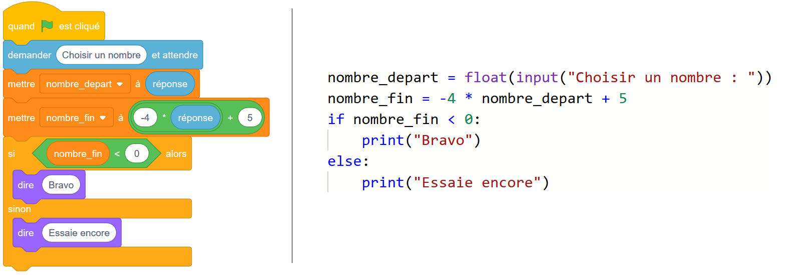
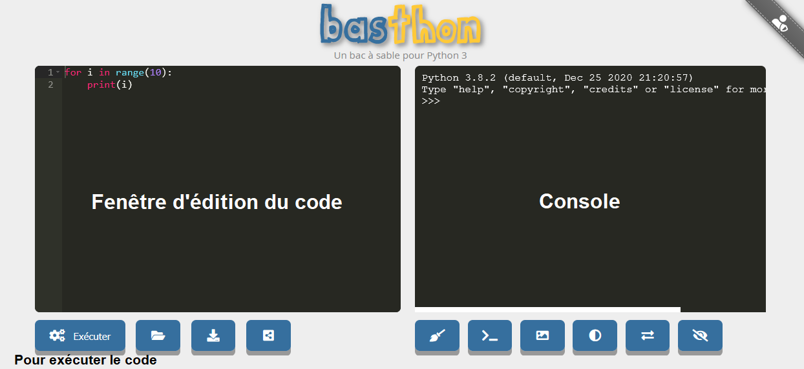
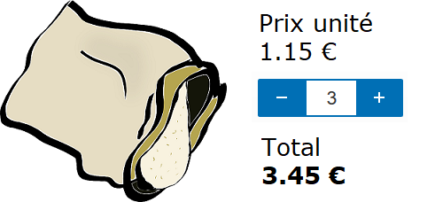

Variables et affectations
❔ Pourquoi code-t-on ? (exécutez la cellule ci-dessous pour voir une petite vidéo)
from IPython.display import HTML
HTML("""<iframe width="560" height="315" src="https://www.youtube-nocookie.com/embed/7b3QupZc08Y" title="YouTube video player" frameborder="0" allow="accelerometer; autoplay; clipboard-write; encrypted-media; gyroscope; picture-in-picture" allowfullscreen></iframe>""")
🟥 1. Introduction¶
Au collège, vous avez déjà programmé mais en utilisant un langage de programmation par blocs. Ce type de langage est très utile pour apprendre les bases de l’algorithmique et de la programmation mais ne constitue pas un langage utilisé pour programmer réellement. Pour cela, on utilise des langages dits textuels qui nécessitent d’écrire tout le code avec son clavier.
Au lycée, vous allez apprendre l’un de ces langages : le langage Python. Vous l’utiliserez dans différentes disciplines : Mathématiques, SNT, Physique-Chimie, spécialité NSI notamment.
Différences collège/lycée
Voici ci-dessous à gauche, un programme écrit dans un langage par blocs et à droite le même programme écrit dans le langage Python.

🟥 2. Variables¶
En informatique, il est indispensable de conserver des informations de natures diverses. Par exemple, votre smartphone enregistre dans sa mémoire votre numéro de téléphone, les numéros de téléphones de vos contacts, vos messages (SMS), vos photos, vos applications, etc. Chacune de ces informations est stockée à un endroit précis dans la mémoire dans ce qu’on appelle une variable.
Ainsi, de manière simplifiée, retenez la définition suivante.
Une variable est un espace de stockage de la mémoire (une case mémoire). Chaque variable est caractérisée par son nom, son type et sa valeur.
❔ Au fait, pourquoi dit-on variable ?
Tout simplement car les données qu’elle contient peuvent varier (au cours du temps) : si un ami change de numéro de téléphone, vous êtes content de pouvoir le modifier.
Types de variables¶
Le type d’une variable est la nature de l’information qu’elle contient. Vous conviendrez que l’heure de votre réveil et votre dernier SMS reçu n’ont pas la même nature : le premier correspond à des nombres et le second à du texte.
Dans un premier temps, voici les trois types de base qui nous intéressent :
- le type entier : il désigne les entiers relatifs (positifs ou négatifs).
En Python on parle du typeint(pour integer qui signifie « entier » en anglais) ; - le type flottant : il désigne les nombres décimaux (à virgule).
En Python on parle du typefloat(pour floating qui signifie « flottant » en anglais) - le type chaîne de caractères : il désigne toute suite ordonnée de caractères.
En Python on parle du typestr(pour string qui signifie « chaîne » en anglais).
✏️ Activité 1
✍️ Question : Indiquez le type des variables (entier, flottant ou chaîne de caractères) permettant de stocker sur votre smartphone les informations suivantes :
- le nom d’un contact
- le numéro de téléphone d’un contact
- un SMS
- l’heure du réveil
- le code de votre partage de connexion Wi-Fi
- le pourcentage affiché de batterie restante
- les notes aux deux derniers devoirs de Mathématiques que vous tapez dans l’application Calculatrice pour calculer votre moyenne
Noms de variables (en Python)¶
Chaque variable possède un nom qui permet d’identifier l’emplacement mémoire correspondant.
Dans le langage Python, il y a des règles à respecter pour nommmer les variables. Voici celles qui vous concernent :
- Règle 1 : un nom ne peut contenir que des lettres (a-z, A-Z), des chiffres (0 - 9) et le caractère
_(underscore). - Règle 2 : un nom ne peut pas commencer par un chiffre.
- Règle 3 : les noms sont sensibles à la casse, cela signifie qu’il y a une distinction entre les minuscules et les majuscules : la variable nommée
sntest différente de la variableSnt. - (Règle 4) : il est préférable de toujours choisir un nom de variable représentatif : par exemple, si vous voulez stocker le nom d’une personne dans une variable, il est préférable de l’appeler
nomplutôt quex. - (Règle 5) : il est préférable de ne pas utiliser de caractères accentués dans le nom d’une variable (nous n’entrerons pas dans le pourquoi du comment).
📣 En Python, le symbole underscore (c’est-à-dire
_) est très souvent utilisé pour marquer une séparation entre plusieurs mots dans un nom : si on veut utiliser une variable qui contiendra un nombre d’élèves de Seconde G, on peut la nommernombre_eleves_2Gou encorenb_eleves_2Gcar c’est plus facile à lire quenombreeleves2G.
✏️ Activité 2
✍️ Question 1 : Quels sont les noms de variables incorrects parmi ceux proposés ? Vous indiquerez pourquoi.
prix achat, prix_achat, note, 2ndeG, SecondeG, Seconde:G, dix-huit
✍️ Question 2 : Proposez un nom de variable permettant de stocker :
- le nombre de filles de Seconde G
- le tarif d’un repas au self
- l’aire d’un triangle (il n’y a qu’une seule figure)
- la note à un devoir d’anglais
Valeurs des variables¶
Chaque variable possède une valeur qui est l’information qu’elle porte. Par exemple,
- la valeur de la variable
nombre_eleves_2Gpourrait être34, - celle de la variable
notepourrait être14.5, - celle de la variable
prenompourrait être"Louane".
Affecter une valeur à une variable¶
En Python, pour définir ou modifier la valeur d’une variable c’est très simple, il suffit d’utiliser le symbole égal : =.
Exemple
Le programme Python
note = 15
note = 15.5
prenom = "Louane"
permet de :
- créer une variable
notedont la valeur vaut 15, c'est donc une variable de type entier (inten Python) - puis de modifier la valeur de la variable
notequi vaut 15.5 à l'issue de la deuxième ligne.
👉🏻 Important : on utilise le point (.) et non pas la virgule pour écrire des nombres décimaux.
👉🏻 Dans ce cas, le type de la variable a changé : c'est devenu un flottant (floaten Python). - et enfin de créer une variable
prenomdont la valeur est la chaine de caractères "Louane".
👉🏻 Important : On utilise les guillemets ("") pour désigner les chaînes de caractères.
Exécutez la cellule suivante
# CELLULE À EXÉCUTER !!!!!!!!!!!!!
note = 15
note = 15.5
prenom = "Louane"
À l'issue du programme précédent on peut évaluer la valeur de chaque variable en exécutant les cellules ci-dessous : (si une erreur s'affiche, c'est sans doute que vous avez oublié d'exécuter la cellule précédente)
note
prenom
On peut aussi voir le type d'une variable en utilisant la fonction type comme ci-dessous :
type(note)
type(prenom)
Afficher la valeur d'une variable¶
Pour afficher la valeur d’une variable on utilise la fonction print. Par exemple, pour afficher la valeur de la variable note on écrit simplement : print(note).
On peut ainsi ajouter des affichages dans le programme précédent :
note = 15
print(note)
note = 15.5
print(note)
prenom = "Louane"
print(prenom)
🟥 3. Opérations sur les variables de type nombre (int et float)¶
Nous nous contenterons ici de montrer quelques opérations possibles sur les entiers et les flottants (on parle rapidement des chaînes de caractères en fin de document).
Il n’y a pas de surprise : il est possible d’additionner, soustraire, multiplier, diviser des variables de type nombre (entier ou flottant). On utilise pour cela les symboles habituels résumés dans le tableau ci-dessous dans lequel on indique aussi comment élever un nombre à une certaine puissance.
| Opération | Écriture en Python |
|---|---|
| Addition | a + b |
| Soustraction | a - b |
| Multiplication | a * b |
| Division | a / b |
Élever a à la puissance n |
a ** n |
✏️ Activité 3
On considère le programme Python suivant :
a = 15
b = 10
c = a + b
d = c / 2
✍️ Question 1 : Déterminez mentalement la valeur de la variable d à l'issue de ce programme ?
✍️ Question 2 : Donnez le type de chacune des variables de ce programme.
🐍 Question 3 : Recopiez ce programme dans la cellule ci-dessous (sans faire un copier-coller, c'est justement pour apprendre).
# à vous de jouer !
🐍 Question 4 : Utilisez la fonction print pour afficher la valeur de la variable d afin de vérifier votre réponse à la première question.
🐍 Question 5 : Exécutez la cellule ci-dessous puis exécutez le programme ligne par ligne avec les boutons Forward > et < Back pour bien comprendre son fonctionnement.
On utilise ici les fonctionnalités de la bibliothèque
tutorqui permet d'exécuter un programme ligne par ligne.
from tutor import tutor # on importe la fonction tutor de la bibliothèque tutor
a = 15
b = 10
c = a + b
d = c / 2
tutor() # on utilise cette fonction pour visualiser le programme ligne par ligne
🐍 Question 6 : On considère maintenant que a et b correspondent à des notes. Réécrivez le programme en utilisant des noms de variables plus représentatifs (pour les 4 variables).
# à vous de jouer !
🟥 4. À vous de jouer !¶
📣 Les activités qui suivent n’ont pas de contexte particulier. C’est pourquoi on utilise des noms de variables peu représentatifs. Leur seul but est de faire ancrer les notions abordées dans ce document.
✏️ Activité 4
On considère le programme Python suivant :
a = 8
b = 3
a = a - 4
b = 2 * b
a = a + b
print(a)
✍️ Question 1 : Combien de variables sont utilisées ? Donnez leurs noms.
✍️ Question 2 : Déterminez mentalement la valeur finale de la variable a ?
🐍 Question 3 : Vérifiez votre réponse en recopiant le programme dans la cellule ci-dessous (sans faire un copier-coller) puis en exécutant ce programme.
# à vous de jouer !
🐍 Question 4 : Il est possible d’afficher plusieurs valeurs avec la fonction print. Par exemple, si on veut afficher les valeurs des variables a et b on écrit simplement print(a, b). Modifiez la dernière ligne du programme précédent pour afficher les valeurs finales de variables a et b !
✏️ Activité 5
L'utilisation d'un notebook facilite l'apprentissage, mais sachez que la plupart du temps on utilise un éditeur de code pour écrire et exécuter des programmes Python.
C’est un logiciel qui se décompose généralement en deux fenêtres :
- la fenêtre d’édition (à gauche dans la capture d'écran ci-dessous) dans laquelle on écrit le programme dans le langage Python
- et la console (à droite dans la capture d'écran) dans laquelle peuvent notamment s’afficher les valeurs des variables souhaitées (si on utilise la fonction
print()).

Il existe énormément d'éditeur et nous utiliserons pour cette séance un éditeur en ligne appelé BASTHON (qui signifie Bac À Sable Python) qui ne nécessite pas d’installation (vous pourrez donc l’utiliser chez vous rien qu’avec une connexion Internet) et qui est aussi accessible via la plateforme Capytale.
Voici un lien permettant d'accéder à Basthon : https://console.basthon.fr/.
🐍 Consigne : Cliquez sur le lien ci-dessus pour ouvrir l'éditeur de code puis recopiez dans la fenêtre d'édition (celle de gauche) le programme de l'activité précédente. Vous exécuterez ensuite le programme en cliquant sur le bouton "Exécuter" et observerez bien que c'est dans la console (fenêtre de droite) que s'affiche la valeur de la variable a.
✏️ Activité 6
On considère le programme de calcul suivant.
- A prend la valeur 5
- Multiplier A par 3
- Soustraire 4 au résultat
- Elever le résultat au carré
- Afficher le résultat
🐍 Question : Écrivez un programme Python permettant de coder ce programme de calcul. Vérifiez ensuite en l'exécutant.
Vous pouvez utiliser la cellule ci-dessous ou l'éditeur Basthon.
# à vous de jouer !
✏️ Activité 7

Sur un site de vente en ligne, on peut acheter différents articles. Un paquet de farine d'un kg coûte 1,15 € et une boîte de six oeufs coûte 1,50 €.
🐍 Question : Écrivez un programme Python qui :
- utilise deux variables pour stocker le nombre de paquets de farine et de boîtes d'oeufs souhaités
- puis, qui calcule et affiche le prix total à payer pour la commande.
Vous pouvez utiliser la cellule ci-dessous ou l'éditeur Basthon.
# à vous de jouer !
🟥 5. Opérations sur les chaînes de caractères¶
Pour les chaînes de caractères c’est plus court car il n’y a que deux opérations possibles :
- la concaténation qui consiste à mettre bout à bout deux chaînes pour former une unique chaîne : on utilise pour cela le symbole d’addition
+. - la répétition qui consiste à ajouter une chaîne un certain nombre de fois à elle-même : on utilise pour cela le symbole de multiplication
*.
Exemple : Exécutez le programme suivant pour comprendre ce deux opérations
chaine1 = "Lou"
chaine2 = "ane"
chaine3 = chaine1 + chaine2 # concaténation
print(chaine3)
chaine4 = 3 * chaine1 # répétition
print(chaine4)